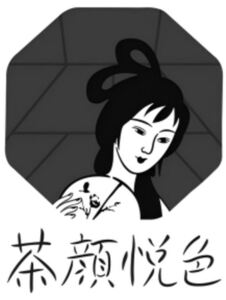

Trade Mark Journal No.2025/049 5 December 2025
WO0000001888066 (3,4,5,6,8,9,10,11,14,16,18,20,21,24,25,26,27,28)
Office of origin: China
Date of International Registration:22 May 2025
Date of designation in the UK:
22 May 2025

International priority date claimed: 18 March 2025
(China)
(84104236)
International priority date claimed: 18 March 2025
(China)
(84106863)
International priority date claimed: 18 March 2025
(China)
(84110189)
International priority date claimed: 18 March 2025
(China)
(84110625)
International priority date claimed: 18 March 2025
(China)
(84118310)
International priority date claimed: 18 March 2025
(China)
(84120288)
International priority date claimed: 18 March 2025
(China)
(84121852)
International priority date claimed: 18 March 2025
(China)
(84123051)
International priority date claimed: 18 March 2025
(China)
(84123172)
International priority date claimed: 18 March 2025
(China)
(84124183)
International priority date claimed: 18 March 2025
(China)
(84126875)
International priority date claimed: 18 March 2025
(China)
(84127269)
International priority date claimed: 19 March 2025
(China)
(84139999)
International priority date claimed: 19 March 2025
(China)
(84140811)
International priority date claimed: 19 March 2025
(China)
(84141595)
International priority date claimed: 19 March 2025
(China)
(84143749)
International priority date claimed: 19 March 2025
(China)
(84156479)
International priority date claimed: 19 March 2025
(China)
(84160424)
- Class 3
- Cosmetics for animals; cosmetics; breath freshening strips; polishing preparations; cleaning preparations; grinding preparations; air fragrancing preparations; incense; perfumery; cakes of toilet soap; essential oils; air fragrance reed diffusers.
- Class 4
- Industrial grease; industrial wax; charcoal [fuel]; fuel; biomass fuel; candles; wicks for candles; dust removing preparations; perfumed candles; scented candles.
- Class 5
- Depuratives; adhesive bandages [materials for dressings]; eyepatches for medical purposes; dietetic substances adapted for medical use; mothballs; antibacterial soap; aseptic cotton; moxa rolls for moxibustion; medicinal tea; solutions for contact lenses; insect repellent incense.
- Class 6
- Ironmongery; containers of metal [storage, transport]; split rings of common metal for keys; works of art of common metal; clips of metal for sealing bags; trays of metal; props of metal; clothes hooks of metal; keys of metal; wind vanes of metal.
- Class 8
- Vegetable knives; eyelash curlers; garden tools, hand-operated; shears; hand tools, hand-operated; hand drills, hand-operated; hair braiders, electric; borers; hobby knives [scalpels]; tableware [knives, forks and spoons].
- Class 9
- Covers for tablet computers; cases for smartphones; measuring instruments; eyeglasses; holders adapted for mobile telephones and smartphones; ear pads for headphones; decorative magnets; measures; keyboard cover; mouse pads.
- Class 10
- Cooling patches for medical purposes; sanitary masks; feeding bottles; gum massagers for babies; crutches; ear picks; disposable steam-heated patches for therapeutic purposes; apparatus for physiotherapy; ear plugs [hearing protection devices]; athletic tapes.
- Class 11
- Electric fans for personal use; pocket warmers; humidifiers; lamps; chinese lanterns; lampshades; hot water bottles; coffeepots, electric; tea kettles, electric; heating pads, electric, not for medical purposes.
- Class 14
- Jewellery for pets; watch bands; jewellery; brooches [jewellery]; badges of precious metal; works of art of precious metal; clocks; necklaces [jewellery]; jewellery rolls; jewellery boxes.
- Class 16
- Writing or drawing books; paper cutting crafts; desk mats; printed publications; stationery; adhesive tapes for stationery or household purposes; pens; paper; labels of paper or cardboard; coasters of paper; paper bags; drawing materials; stickers.
- Class 18
- Imitation leather; umbrellas; umbrella covers; reusable shopping bags; clothing for pets; leashes for pets; handbags; walking sticks; backpacks; trunks [luggage].
- Class 20
- Fans for personal use, non-electric; bolsters; labels of plastic; furniture; kennels for household pets; works of art of wood, wax, plaster or plastic; picture frames; clips of plastic for sealing bags; corks for bottles; mirrors [looking glasses]; coathooks, not of metal.
- Class 21
- Ice cube moulds; cosmetic utensils; opaline glass; cleaning instruments, hand-operated; mixing spoons [kitchen utensils]; combs; toothpick holders; bottles; works of art of porcelain, ceramic, earthenware, terra-cotta or glass; plates; bowls [basins]; tea services [tableware]; tea bag rests; candle holders; coasters, not of paper or textile; straws for drinking; drinking vessels.
- Class 24
- Silk fabrics; household linen; bed linen; non-woven textile fabrics; felt; blankets; banners of textile or plastic; coasters of textile; towels of textile; fabric.
- Class 25
- Scarves; caps being headwear; gloves [clothing]; clothing; shower caps; sleep masks; ear muffs [clothing]; belts [clothing]; hosiery; shoes.
- Class 26
- Letters for marking linen; artificial flowers; heat adhesive patches for repairing textile articles; embroidery; charms, other than for jewellery, key rings or key chains; breast lift tapes; fastenings for clothing; brooches [clothing accessories]; sewing kits; badges for wear, not of precious metal.
- Class 27
- Gymnastic mats; floor mats; floor coverings; carpets; carpet underlay; mats; wallpaper; bath mats; yoga mats; wall hangings, not of textile.
- Class 28
- Ornaments for Christmas trees, except lights, candles and confectionery; elbow guards for athletic use; jigsaw puzzles; board games; toys; dolls for playing; playing cards; balls for sports; fishing tackle; spinning tops [toys]; flying discs [toys].
Hunan Chayue Cultural Industry Development Group Co., Ltd.